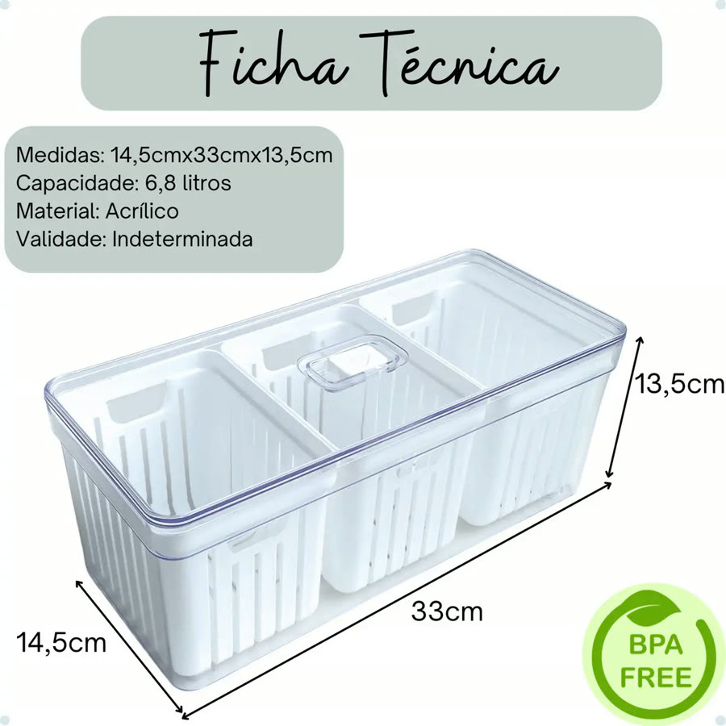
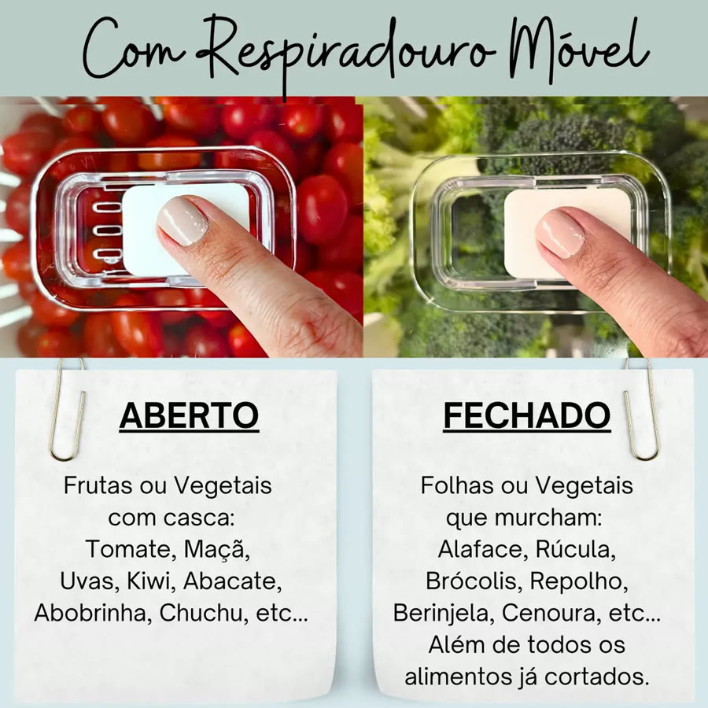
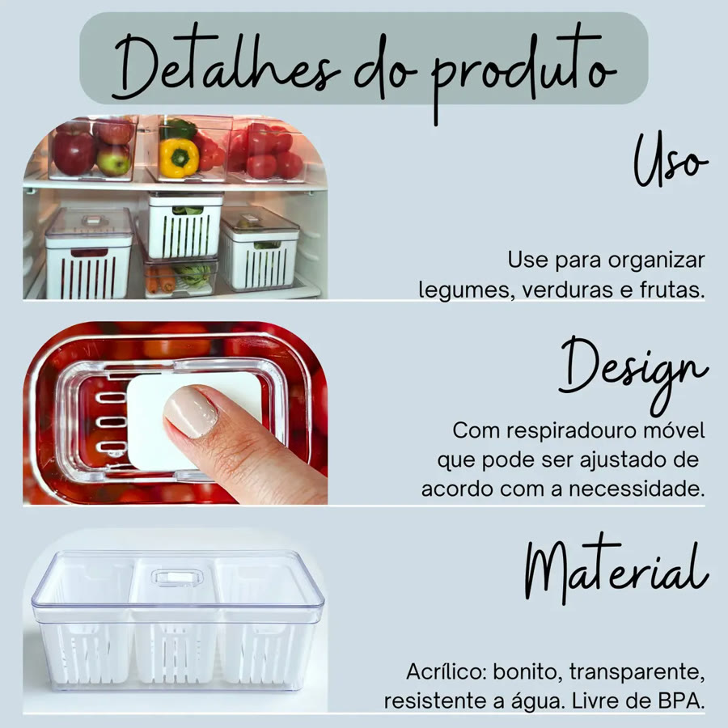
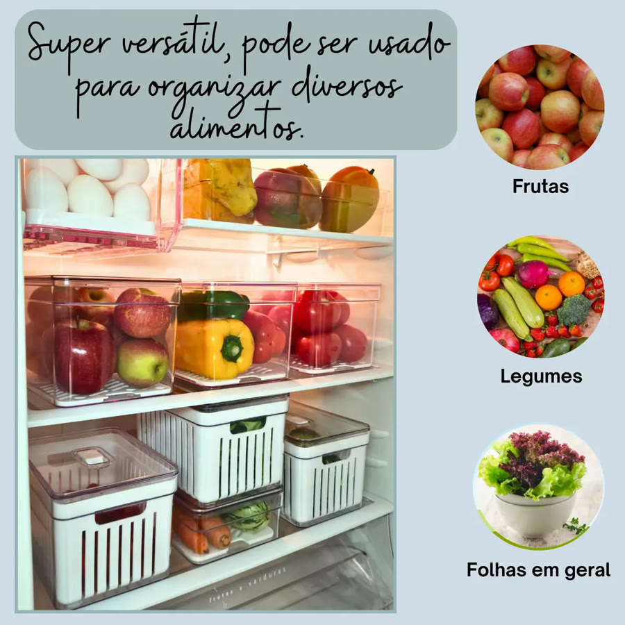
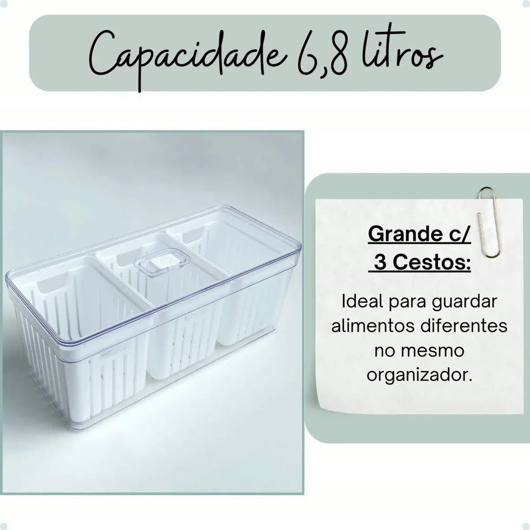
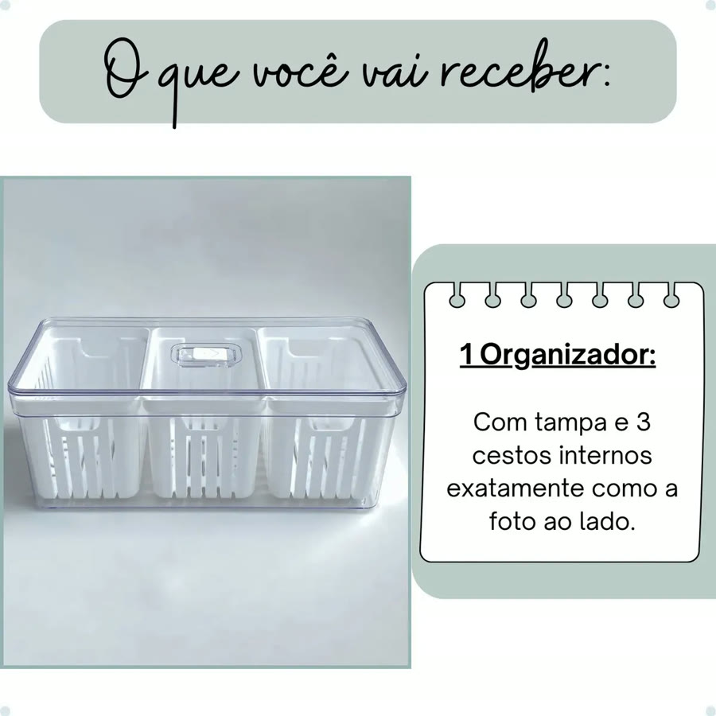
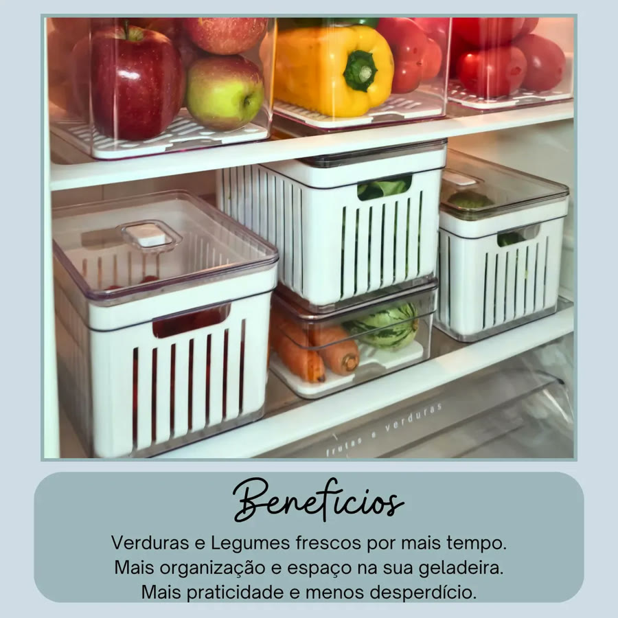
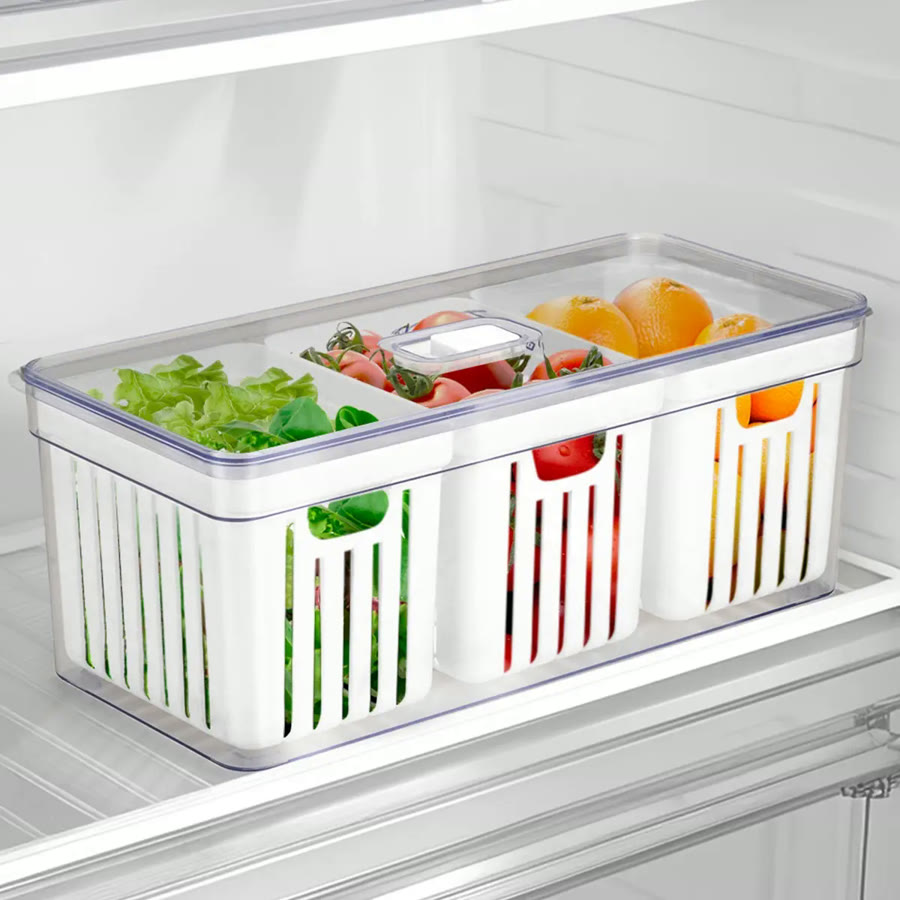

Achado nº 23
Organizador de geladeira com 3 cestos de drenagem (6,8 L)









O que diz a página oficial do produto
- Pote organizador de geladeira com tampa e 3 cestos vazados por dentro
- Segundo o anúncio, os cestos de drenagem evitam que os alimentos fiquem molhados depois de lavados
- A tampa tem um respiradouro que abre e fecha; segundo o anúncio, aberto para frutas e legumes com casca e fechado para folhas e alimentos cortados
- Capacidade de 6,8 litros; mede 33 cm de comprimento, 14,5 cm de largura e 13,5 cm de altura
- Feito de acrílico transparente; segundo o anúncio, é livre de BPA e pode ser empilhado
- Não deve ir à lava-louças, ao freezer nem ao micro-ondas
- No Mercado Livre, tem nota 4,9 com mais de 1.200 avaliações e mais de 5 mil vendidos
Link de afiliado: se você comprar por ele, a Achadaria pode receber uma comissão, sem custo extra para você. Preço, estoque e entrega são da loja e podem mudar; confira lá antes de comprar.